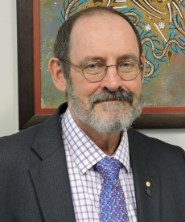
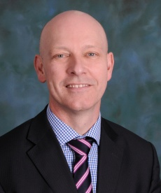
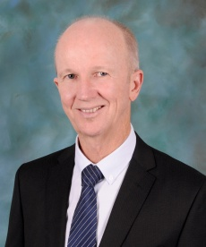
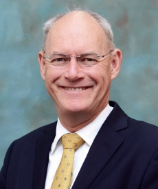
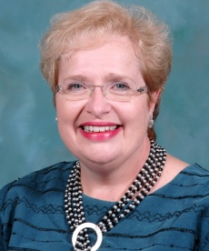

Smart City
Homepage
Profile
Search Page
Log out
About
Contact
hospital
information of the hospital

Professor David Crompton OAM Position: Executive Director, Addiction and Mental Health Services Start date: June 2012 David worked in private practice as a rural general practitioner prior to commencing psychiatry training and spending 12 years in private psychiatry practice. David is a Professor within the School of Health Service and Social Work and holds academic titles with the University of Queensland and Queensland University of Technology. He has held leadership roles in Queensland Health and New South Wales Health and is the coordinator for the Centre for Neuroscience, Recovery and Mental Health. He was awarded a Medal of the Order of Australia for development of community based mental health services for veterans, development of community post-traumatic stress disorder and anxiety and substance abuse treatment services. David’s research interest includes the impact of trauma and natural disasters, suicide and factors that influence recovery of individuals with mental illness.
Dr Michael Daly Position: Executive Director, Clinical Governance Start date: June 2012 A graduate from University College Dublin, Michael commenced his senior management roles as the Executive Director Medical Services of West Moreton in 2002. After leading the Bundaberg Hospital Emergency Response Team in 2005, Michael founded the Southern Area Clinical Governance Unit. Since 2008 Michael has been the Executive Director Clinical Governance, Metro South Health, incorporating a Tertiary and four General Hospitals. At Metro South Health, Michael has developed and evolved a number of Australia-leading Clinical Governance systems, including Communication Training programs, Senior Medical Performance processes, Audit and Scorecard systems and Digital Hospital Safety systems. Michael led the Accreditation against the 10 National Standards that saw Princess Alexandra Hospital achieve the best results in Australia. He is running collaborations with New Zealand and Norway and is a frequent invitee to provide Clinical Governance support and advice to other hospitals across Australia. Since 2014, 14 Hospitals have visited Michael and his team. Michael is an Adjunct Associate Professor at QUT, and is a member of the National Model Clinical Governance Advisory panel. He is published in End of Life, Deteriorating Patients, Disaster Management and Communication Programs and is an International speaker on Senior Medical Performance and Digital Hospital Safety.

Mr Michael Draheim Position: Chief Information Officer Start date: June 2012 Michael is a registered nurse with postgraduate qualifications in intensive care, health administration and information systems. He has a background in clinical education, informatics and leadership positions across both the public and private sectors and has worked in health delivery roles in Queensland, New South Wales and Tasmania. Michael has experience in the implementation, management and delivery of ICT and its benefits in hospital and health care environments. He is passionate about working with clinicians in expanding the understanding and value informatics can bring to health care.
Ms Jennifer Rossiter Position: Acting Executive Director, Corporate Services Start date: February 2016 Jen is a graduate of Queensland University of Technology (QUT) with a Master of Science and spent almost ten years ‘on the bench’ at Forensic and Scientific Services, specialising in trace metal toxicological analysis. In the past, Jen worked in a number of roles including ICT and workforce project management, before moving back to the laboratory environment as Director and successfully led a significant business improvement program. More recently, following her desire to work in an engineering environment (as her Masters qualification was a joint study with the School of Civil Engineering) she worked in the Department of Transport and Main Roads, leading the delivery of the state planning and corporate services programs and the facilitation of land development across the state. Jen has undertaken a number of post-graduate studies in leadership and management and has particular interests in adaptive leadership, culture change and the implementation of systems and processes that dramatically improve service delivery in healthcare and the public sector as a whole. She was previously Director of the Commercial and Business Portfolio of the now Health Support Queensland.
information of the hospital


Dr Stephen Ayre Position: Chief Executive Start date: July 2017 Dr Stephen Ayre began his career as a general practitioner on the Sunshine Coast and has worked in several hospitals across the state. He is a graduate of the University of Queensland Medical School, has a Masters in Health Administration from the University of NSW and is a Fellow and Jurisdictional Coordinator Training for the Royal Australasian College of Medical Administrators. Dr Ayre has worked in senior management roles across health, including community health, medical superintendent and medical services. He also worked in Tasmania, where he was the CEO of the Launceston General Hospital from 2004 to 2008. Dr Ayre worked as the Executive Director of Medical Services at The Prince Charles Hospital from 2008 to 2014. He was appointed as Executive Director, Princess Alexandra Hospital and QEII Jubilee Hospital Health Network in May 2014, prior to his appointment as Chief Executive in July 2017.
Dr Michael Cleary Position: Acting Executive Director, PAH-QEII Health Network Start date: July 2017 Dr Michael Cleary is a respected and experienced leader, strategic planner and specialist at identifying and capturing business opportunities, leading transformational change and delivering improved performance. He has a strong focus on corporate governance and stewardship of organisations. He has an extensive background at senior level within health including his involvement on the boards of ACEM and ACHS. He represented Queensland on AHMAC and the Hospitals’ Principal Committee. He has held the role of Deputy Director-General and Chief Operations Officer within the Queensland Department of Health. He is currently the Executive Director Medical Services at the Princess Alexandra Hospital and President of the Royal Australian College of Medical Administrators.

Dr Jacinta Powell Position: Executive Director, Logan-Bayside Health Network Start date: November 2016 Dr Jacinta Powell was appointed to the role of Executive Director, Logan Bayisde Health Network in August 2017 after acting in the position for a number of months. Prior to this was the Director of Medical Services for Logan and Beaudesert Hospitals, the Medical Director for the Metro North Mental Health Service and Clinical Director for The Prince Charles Hospital. Her previous experience includes Director, Inner North Brisbane Mental Health Service, Director of Herston Mental Health Services and founder of the Eating Disorders service at Royal Brisbane and Womens Hospital. Dr Powell’s qualifications include the Fellowship of the Royal Australian and New Zealand College of Psychiatrists (1994), a Masters of Health Administration from the University of NSW (2002) and a Fellowship of the Royal Australasian College of Medical Administrators (2011). Dr Powell has experience in working in state wide roles as the Principal Advisor in Psychiatry and Director of Mental Health for Queensland. She has been an active member of the Queensland Branch of the RANZCP for many years currently holding the position of Chair of the Queensland Branch Training Committee. She is a surveyor with the Australian Council on Healthcare Standards and has a keen interest in health care systems, patient safety and consumer and carer engagement. Dr Powell maintains an active clinical practice working with adults with severe, chronic and complex mental illness including providing a consultation liaison psychiatry service to the renal dialysis unit.
Ms Veronica Casey Position: Executive Director, Nursing Services Start date: June 2012 Veronica has held nursing executive leadership positions in Queensland Health since 1998. She worked in nursing director roles at The Prince Charles Hospital, the Royal Brisbane Hospital and the Royal Women’s Hospital prior to her appointment as Executive Director, Nursing Services at Princess Alexandra Hospital. During her time at PAH, she has been instrumental in helping the hospital achieve re-designation under the Magnet® credentialing program, and the introduction of the Nurse Sensitive Indicator performance monitoring system. In 2010, she was appointed as one of three inaugural international commissioners for the American Nurses Credentialing Centre. Veronica was appointed as a Board Member on the Nursing and Midwifery Board of Australia in May 2014.